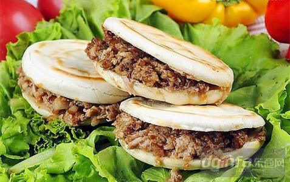
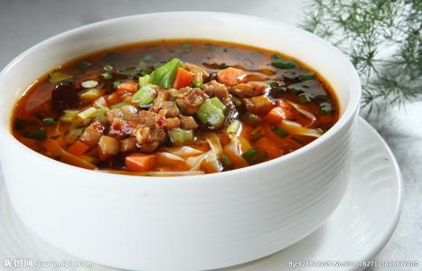
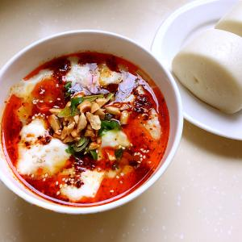

牛羊肉泡馍，是独具西安方邦特色的著名小吃。传说，牛羊肉泡是在公元前11世纪古代"牛羊羹"的基础上演化而来的。西周时，曾将“牛羊羹”列为国王、诸侯的“礼馔”。据《宋书》记载，南北朝时，毛修之因向宋武帝献上牛羊羹这一绝味，武帝封其为太官史，后又升为尚书光禄大夫。据说，因大宋皇帝赵匡胤喜食牛羊肉泡馍，牛羊肉泡便成了长安街上的著名小吃。北宋大文学家苏东坡曾有“陇馔有熊腊，秦烹唯羊羹”的赞美诗句。

牛羊肉泡馍，是独具西安方邦特色的著名小吃。传说，牛羊肉泡是在公元前11世纪古代"牛羊羹"的基础上演化而来的。西周时，曾将“牛羊羹”列为国王、诸侯的“礼馔”。据《宋书》记载，南北朝时，毛修之因向宋武帝献上牛羊羹这一绝味，武帝封其为太官史，后又升为尚书光禄大夫。据说，因大宋皇帝赵匡胤喜食牛羊肉泡馍，牛羊肉泡便成了长安街上的著名小吃。北宋大文学家苏东坡曾有“陇馔有熊腊，秦烹唯羊羹”的赞美诗句。
陕西腊汁肉夹馍的历史非常悠久，在《周礼》一书提到的“周代八珍”中的“渍”就是腊汁肉。战国时代有“寒肉”，当时位于秦、晋、豫三角地带的韩国已能制作;秦统一后，制作技艺传到长安，并世代流传下来。北魏贾思勰《齐民要术》记载的“腤肉”制法，与现在的腊汁肉基本相同，只是现有的用料制法更为讲究。腊汁肉夹馍的做法考究，腊汁肉色泽红润，气味芬芳，肉质软糯，糜而不烂，人称：“肥肉吃不腻口，瘦肉无渣满含油，不用牙咬肉自烂，食后留香久不散。”
陕西凉皮种类繁多，有麻酱凉皮、秦镇凉皮、汉中凉皮、岐山擀面皮和面筋凉皮等，做法各异，调拌时各具特色，口味也不尽相同，但都以酸、辣、香为主。

汉中面皮，是陕西南部汉中地区着名特色小吃。相传始于秦汉，一般是把大米浸泡后磨成米浆，上笼蒸成薄皮儿，趁热抹上菜籽油，切成条状，依个人口味调入油辣子、味精、精盐、醋、酱油、蒜泥等佐料，拌匀即可食用（当地多热食，称热面皮儿），亦可置于通风处降温后凉拌（当地称冷面皮或凉面皮）。配菜（底垫子）主要有黄豆芽、土豆丝、芹菜、菠菜等时令小蔬，口感软糯，香辣。不需即时食用时还可以晾干后油炸食用。也有烩，炒等吃法。
秦镇米皮，是用大米磨浆蒸成。是陕西省着名的汉族小吃。相传，秦始皇在位时，有一年陕西关中一带大旱，沣河缺水，稻谷枯萎，农民只好在田里挖井浇地，好不容易打下的粮食尽是稗秕。碾出的大米质量太差，百姓无法向朝廷纳供大米，有个叫李十二的用大米碾成米粉，蒸出米皮，献给秦始皇，秦始皇吃后大喜，命秦镇每年的贡品只献米皮，这样就形成了久负盛名的美食。
臊子面是中国西北地区汉族传统面食、着名西府小吃，以宝鸡的岐山臊子面最为正宗。在陕西关中平原及甘肃陇东等地流行。臊子面历史悠久。其中也含有配菜比如豆腐，鸡蛋等，做法简单。在《水浒传》第三回：“奉着经略相公钧旨，要十斤精肉，切做臊子。”这里的臊子就是肉丁的意思。
乾县豆腐脑属于“乾县三宝”中的一绝，豆腐脑不但豆腐细腻，色白洁净，鲜嫩柔软，而且调料讲究，味香可口营养价值极高，乾县豆腐脑以“酸、辣”为特色，是补品中的瑰宝。
千层油酥饼是陕西汉族特色小吃。色泽金黄、层次鲜明、脆而不碎、油而不腻、香酥适口。相传，油酥饼是由唐代的千层烙饼，经历代厨师不断精心改进而成。经制酥、和面、制饼、煎烤而成。

陕西裤带面是陕西特色小吃。这名字太有生活，非常接地气。用裤带来形容面条的宽。具体如何吃这宽宽的面条，就可以依个人所爱，酸甜苦辣随个人口味。如同吃捞面，可以三鲜卤，可以炸酱，也可以麻酱面。
陕西油泼面是一道色香味俱全的传统小吃，属于秦菜系。油泼面是一种很普通的面食制作方法，将手工制作的面条在开水中煮熟后捞在碗里，将葱花碎、花椒粉、盐等配料和厚厚一层的辣椒面一起平铺在面上，用烧的滚烫的菜油浇在调料上，顿时热油沸腾，将花椒面、辣椒面烫熟而满碗红光，随后调入适量酱油、香醋即可。也可另外加入腊汁肉、西红柿鸡蛋等搭配食用。
要是到西安的早餐那么“肉丸糊辣汤”就不得不提，不得不试试。西安的娃们没有没吃过的，很少有不爱吃的要说“胡辣汤”在西安，那分为两大流派，一个是“河南的胡辣汤”还有就是西安回民独有的“肉丸糊辣汤
蘸水面是陕西省风味独特的传统面食小吃。西北人爱吃的面食各有特色，但杨凌蘸水面概括起来只有20个字：“面白薄筋光，汤汪蒜辣香，汤面分盆装，越嚼越觉香。”
关于biangbiang面的名字，有着多种传说，其中流传最广的有两种。一种传说认为秦始皇造了这个字，我觉得这种说法可能是受到武则天造字启发而来的。另一种传说认为是一个秀才造出了这个字，虽然无从考证，但感觉上至少比第一种传说可信。关于biang字还有不少民歌小调，详细解释了这个字的写法，例如“一点飞上天，黄河两头弯，八字大张口，言字往进走；左一扭，右一扭；东一长，西一长，中间夹个马大王，月字边，心字底，挂个钩担挂麻糖，坐个车车逛咸阳”。
搅团是中国西北地区着名的汉族特色小吃，定义为“用面搅成的浆糊”，陕甘宁尤好吃。根据主要用料不同，分为荞面搅团、玉米搅团和洋芋搅团，陕北用荞面做搅团，更筋道味美。在西北，有一种说法：谁家娶的媳妇儿贤不贤惠，是要看看她打的搅团光不光或筯道不筯道。搅团的吃法有很多种，有水围城、漂鱼儿，陕北也有烩搅团、炒搅团和凉拌搅团等多种吃法。
葫芦头来源于宋代街市食品中的“煎白肠”，因猪大肠油脂较厚，形状似葫芦，因此叫“葫芦头”。到了30年代，葫芦头已由肉类发展到包括海味类的众多品种，猪肉类葫芦头在用料上也发生了一些变化。如汤中增加了骨头和鸡，使汤味更加浓醇，质量提高，成为秋冬时节的风味小吃。
镜糕是西安清真传统风味小吃，因以糯米为主要原料蒸制成形似圆镜的糕，故得此名。镜糕绵软粘甜，热气蒸腾，含维生素较多，可补中益气。清初，陕西人王弘庆有《咏镜儿糕》诗云：“柳荫槐下清昼长，镜糕担子亦生香，童稚儿女共笑语，且牵阿母欲一尝。”
甑糕历史悠久，因用甑蒸制成熟而得名。甑糕由三千多年前西周时期王子专用的食品糗饵粉餈演变而来。《周礼·天官》中有“羞笾之食糗饵粉餈”的记载。粉餈是在糯米粉内加入豆沙馅(古时叫豆屑末)蒸成的糕饼，吃起来有豆香味。及至唐代，才发展为枣米合蒸。唐尚书令左仆射韦巨源宴请中宗皇帝的“烧尾宴”中的“水晶龙风糕(枣米蒸破见花乃起)”，和现在的甑糕一脉相承。当年冯玉祥将军把西安的甑糕誉为“平民阶级的燕菜”。甑糕作为早餐，在西安街头巷尾随处可见，枣香扑鼻，绵软粘甜，可滋补强身，补中益气。
饸饹，古称“河漏”，因多用荞麦面制成，所以也叫荞面饸饹。据考证，荞面饸饹在元代就有了，元代农学家王祯《农书，荞麦》中记载：“北方山后，诸郡多种，磨而为面或作汤饼，渭之河漏。”饸饹食时不仅带有特异的香味，且对身体大有补益。李时珍《本草纲目》中载：“乔麦最降气宽肠，故能炼肠胃滓滞，而治浊滞、泄痢、腹痛、上气之疾。”因荞麦性寒，故韩城俗语说：“荞面凉冶沿，离不开三样好调和，油泼辣子、蒜、芥茉。”

Copyright © 2017 | 陕ICP备05001616号 | 陕西省，西安市碑林区，西安理工大学金花校区 王小改